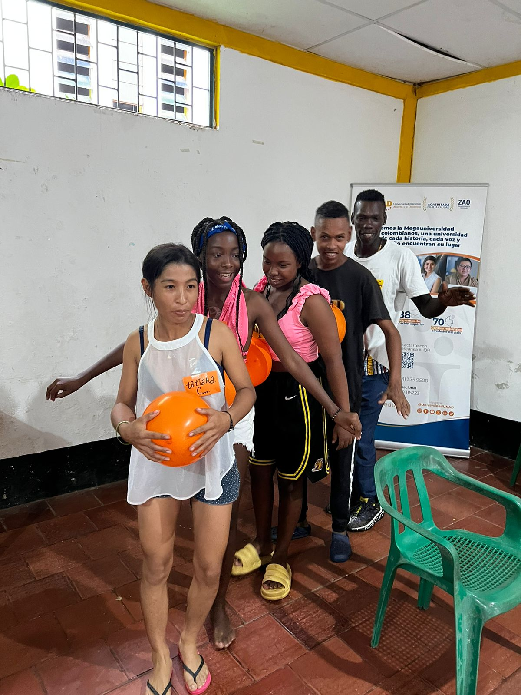

Historias y memoria
Relatos comunitarios y memoria oral que preservan el legado afrodescendiente.
Archivo cultural comunitario
Memoria viva, relatos, danzas, fotografías y saberes de la comunidad afrollanera de Veracruz.
Relatos comunitarios y memoria oral que preservan el legado afrodescendiente.
Registros de expresiones artísticas y prácticas culturales transmitidas por generaciones.
Procesos colectivos que fortalecen identidad, pertenencia y proyección territorial.




El Archivo Cultural Afrocrece reúne piezas visuales y narrativas creadas desde el territorio para preservar la memoria comunitaria.
Contenido organizado para consulta cultural, investigación comunitaria y reconocimiento identitario.
Este archivo conserva la memoria viva de la comunidad, permitiendo que nuevas generaciones reconozcan su historia, sus expresiones culturales y su identidad territorial.
Explora el archivo funcional y accede a fotografías, videos, relatos, eventos y memorias comunitarias.
Entrar al archivo